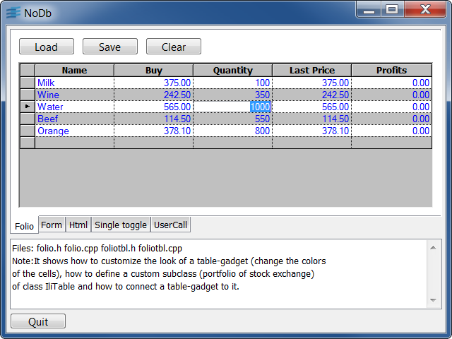
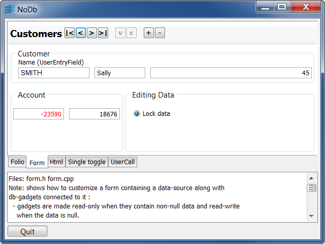
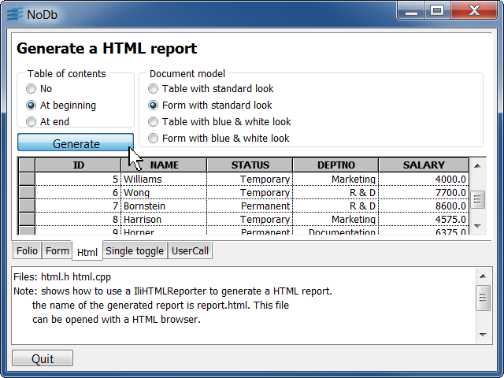
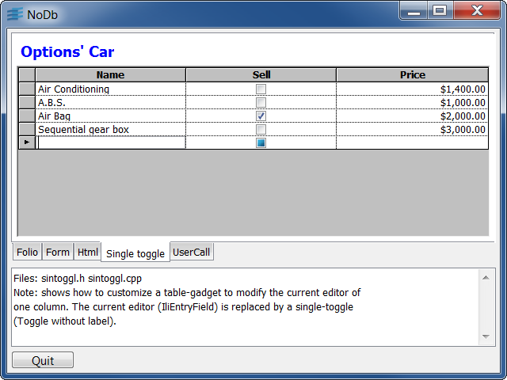
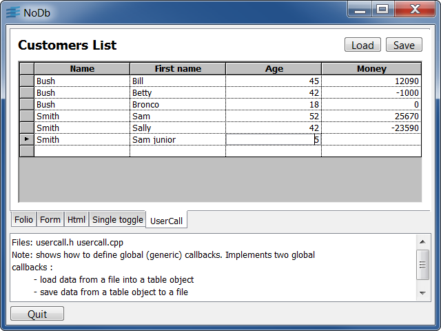

folioThis sample shows how to customize a Table Gadget look and how to define a custom subclass.
Table Gadget's even rows are white and odd rows gray.
The font color is blue except for the Profits column if it's value is negative: it that case, the color is red.
Buttons:
formThis sample shows how to modify a datasource by using db-gadgets connected to it.
The Navigator lets you move from one row to another.
The Lock data button lets you edit or not the differents fields you depending it is on or off.
The Name field is always in capital letter even if it is edited with small letters. The Account field font is blue if positive, red if negative.
htmlThis sample shows how to use the HTML Reporter to generate a HTML report.
The generated report is named "report.html" and can be opened with any HTML browser.
You can choose:
sintogglThis sample shows how to modify the current editor of a Table Gadget's column.
The Sell's column contains a three states button instead of a boolean.
usercallThis sample shows how to define global callbacks.
Buttons: